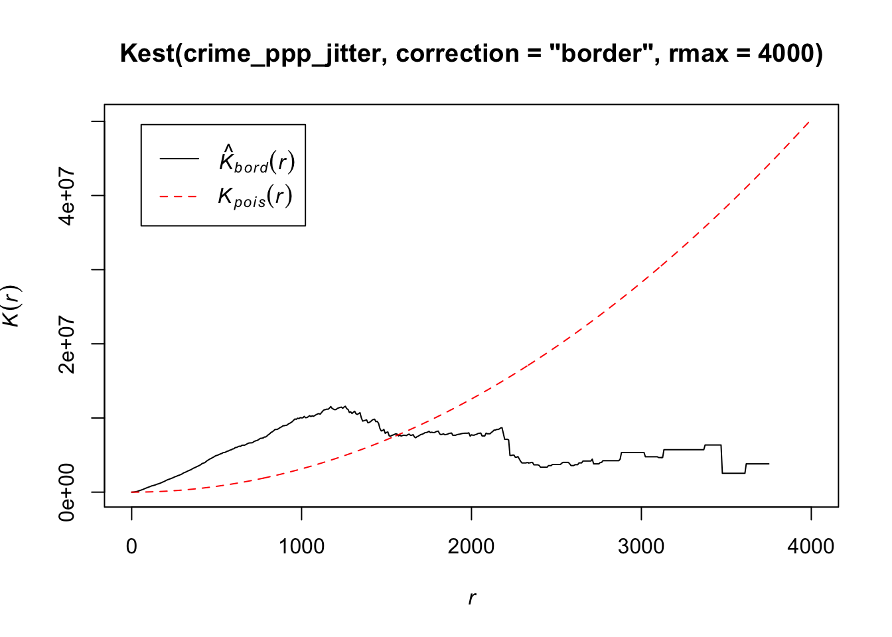

6 Point pattern analysis
6.1 Introduction
In our previous practicals, we have aggregated our point data into areal units, primarily using administrative geographies, to enable its easy comparison with other datasets provided at the same spatial scale, such as the census data used in the previous week, as well as to conduct spatial autocorrelation tests. However, when locations are precisely known, spatial point data can be used with a variety of spatial analytic techniques that go beyond the methods typically applied to areal data. The set of methods unique to point data are often referred to as point pattern analysis and geostatistics.
This week, we focus on point pattern analysis, whilst next week we will look at geostatistics. Within point pattern analysis, we look to detect patterns across a set of locations, including measuring density, dispersion and homogeneity in our point structures. We will look at both distance-based methods, by employing Ripley’s K function, as well as density-based methods, particularly Kernel Density Estimation.
This week is structured by two short lecture videos, two assignments that you need to do in preparation for Friday’s seminar, and the practical material. As always, this week’s reading list is available on the UCL library reading list page for the course.
6.1.1 Video: Overview
[Lecture slides] [Watch on MS stream]6.2 Point pattern analysis
In the previous weeks, we have aggregated our event data into areal units. In R we could do this very easily by identifying all points that fall within a polygon using the st_intersects() function from the sf package. We used this method to
aggregate ‘theft from persons’ in Camden in 2019 as well as to aggregate ‘bicycle theft’ in four of London’s boroughs. However, depending on your research problem and aim, points do not necessarily have to be aggregated and there are many applications in which you want to work with the point locations directly. In fact, the R package spatstat for spatial statistics is predominantly designed for analysing spatial point patterns. The mere fact that the spatstat documentation has almost 1,800 pages should give you a good idea about the general importance of point pattern analysis within the domain of Social and Geographic Data Science.
6.2.2 Example: Point pattern analysis
After last week’s success in analysing spatial autocorrelation and running two spatial models, we got a follow-up assignment to look further into bicycle theft. This time our assignment is to analyse the pattern of bicycle theft for the whole of Greater London in November 2019. We also have access to the boundaries of the 33 London boroughs.
File download
| File | Type | Link |
|---|---|---|
| Local Authority Districts London 2020 | shp |
Download |
| Bicycle theft data London 2019 | csv |
Download |
Download the individual files to your own computer and as usual make sure your data directory is set up correctly and the data are unzipped.
# load libraries
library(tidyverse)
library(spatstat)
library(tmap)
library(sf)
library(maptools)
# load spatial data
lad <- st_read('raw/boundaries/london_lad_2020/london_lad_2020.shp')## Reading layer `london_lad_2020' from data source `/Users/Tycho/Dropbox/UCL/Web/jtvandijk.github.io/GEOG0114/raw/boundaries/london_lad_2020/london_lad_2020.shp' using driver `ESRI Shapefile'
## Simple feature collection with 33 features and 1 field
## geometry type: POLYGON
## dimension: XY
## bbox: xmin: 503568.2 ymin: 155850.8 xmax: 561957.5 ymax: 200933.9
## CRS: 27700# load data
crime <- read_csv('raw/crime/2019_london_bicycle_theft.csv')
# inspect
head(crime)## # A tibble: 6 x 4
## month long lat type
## <chr> <dbl> <dbl> <chr>
## 1 2019-03 -0.0981 51.5 Bicycle theft
## 2 2019-03 -0.0981 51.5 Bicycle theft
## 3 2019-03 -0.0976 51.5 Bicycle theft
## 4 2019-03 -0.0930 51.5 Bicycle theft
## 5 2019-03 -0.0941 51.5 Bicycle theft
## 6 2019-03 -0.0930 51.5 Bicycle theft# filter crime data, create point layer, and project into british national grid (epsg 27700)
crime_dec <- crime[crime$month=='2019-11' & !is.na(crime$long) & !is.na(crime$lat),]
crime_points <- st_as_sf(crime_dec, coords=c('long','lat'),crs=4326)
crime_points <- st_transform(crime_points,27700)
# ensure all points are within the boundaries of Greater London
crime_london <- st_intersects(lad, crime_points)
crime_points <- crime_points[unlist(crime_london),]
# inspect
tm_shape(lad) +
tm_fill() +
tm_shape(crime_points) +
tm_dots()
Where we are now somehow familiar with the sf and sp packages, the spatstat package expects point data to be in yet another format: ppp. An object of the class ppp represents a two-dimensional point dataset within a pre-defined area, the window of observation. Because spatstat predates sf we do need to take several steps to transform our simple features object to a ppp object.
As we are looking at a point pattern, a ppp object does not necessarily have to have attributes associated with the events (as point data are called within spatstat). Within the spatstat environment, attributes are referred to as marks. Be aware that some functions do require these marks to be present.
# transform sf to sp
lad_sp <- as(lad,'Spatial')
# get the window of observation using maptools package
window <- as.owin.SpatialPolygons(lad_sp)
# inspect
window## window: polygonal boundary
## enclosing rectangle: [503568.2, 561957.5] x [155850.8, 200933.9] units# get coordinates from sf object
crime_points_coords <- matrix(unlist(crime_points$geometry),ncol=2,byrow=T)
# inspect
crime_points_coords## [,1] [,2]
## [1,] 532209 181564.0
## [2,] 532403 181853.0
## [3,] 532715 181698.0
## [4,] 532593 181777.0
## [5,] 533501 181453.0
## [6,] 532351 180811.0
## [7,] 531664 181051.0
## [8,] 532349 180863.9
## [9,] 533348 181246.0
## [10,] 533270 181288.0
## [11,] 533157 181016.0
## [12,] 533198 181921.0
## [13,] 532679 180833.0
## [14,] 533117 180851.0
## [15,] 532970 180879.0
## [ reached getOption("max.print") -- omitted 1239 rows ]# create ppp object
crime_ppp <- ppp(x=crime_points_coords[,1],y=crime_points_coords[,2],window=window,check=T)## Warning: data contain duplicated points# inspect
plot(crime_ppp)
Note the messages data contain duplicated points. This is an issue in spatial point pattern analysis as one of the assumptions underlying many analytical methods is that all events are unique; some statistical procedures actually may return very wrong results if duplicate points are found within the data. Long story short: we will need to deal with duplicates points. Although the way you do this is not always straightforward, you basically have two options:
- Remove the duplicates and pretend they are not there. However, only do this when you are sure that your research problem allows for this and you are happy to ‘ignore’ some of the data. For some functions (such as Kernel Density Estimation) it is also possible to assign weights to points so that, for instance, instead of having point event A and point event B at the same location you create a point event C with a mark (attribute) that specifies that this event should be weighted double.
- Force all points to be unique. For instance, if you know that the locations are not ‘actual’ event locations but rather the centroids of an administrative geography, we can slightly adjust all coordinates (jitter) so that the event locations do not exactly coincide anymore. This way we effectively deduplicate our point data without having to get rid off data points.
# check for duplicates
any(duplicated(crime_ppp))## [1] TRUE# count the number of duplicated points
sum(multiplicity(crime_ppp) > 1)## [1] 291This means we have 291 duplicated points. This seems a lot to simply remove. As these are crime data the exact locations are not revealed for privacy and safety reasons, meaning that all crimes get ‘snapped’ to a predefined point location! Let’s shift all our coordinates slighlty to ‘remove’ our duplicates and enforce all points to be unique.
Remember that when you encounter a function in a piece of R code that you have not seen before and you are wondering what it does that you can get access the documentation through ?name_of_function, e.g. ?multiplicity or rjitter. For almost any R package, the documentation contains a list of arguments that the function takes, what these arguments mean / do, in which format the functions expects these arguments, as well as a set of usage examples.
# add some jitter to our points
crime_ppp_jitter <- rjitter(crime_ppp,retry=TRUE,nsim=1,drop=TRUE)
# count the number of duplicated points
any(duplicated(crime_ppp_jitter))## [1] FALSE# inspect
plot(crime_ppp_jitter)
6.2.2.1 Distance-based methods
One way of looking at a point pattern is by describing the overall distribution of the pattern using distance-based methods. With an average nearest neighbour (ANN) analysis, for instance, we can measure the average distance from each point in the study area to its nearest point. If we then plot ANN values for different order neighbours, we will get an insight into the spatial ordering of all our points relative to one another. Let’s try it.
# get the average distance to the first nearest neighbour
mean(nndist(crime_ppp_jitter, k=1))## [1] 326.3529# get the average distance to the second nearest neighbour
mean(nndist(crime_ppp_jitter, k=2))## [1] 517.8048# get the average distance to the third nearest neighbour
mean(nndist(crime_ppp_jitter, k=3))## [1] 668.2226# get the average distance to the first, second, ..., the hundredth, nearest neighbour
crime_ann <- apply(nndist(crime_ppp_jitter, k=1:100),2,FUN=mean)
# plot the results
plot(crime_ann ~ seq(1:100))For point patterns that are highly clusters one would expect the average distances between points to be very short. However, this is based on the important assumption that the point pattern is stationary throughout the study area. Further to this, the size and shape of the study area also have a very strong effect on this metric. In our case, the plot does not reveal anything interesting in particular except that higher order points seem to be slightly closer than lower order points.
Rather than to look at the average distances of different orders neighbours, we can also look at the distance between a point and ‘all distances’ to other points and compare this to a point pattern that is generated in a random manner; i.e. compare our point distribution to a theoretical distribution that has been generated in a spatial random manner. This can be done with Ripley’s K function. Ripley’s K- function essentially summarises the distance between points for all distances using radial distance bands. The calculation is relatively straightforward:
- For point event A, count the number of points inside a buffer (radius) of a certain size. Then count the number of points inside a slightly larger buffer (radius).
- Repeat this for every point event in the dataset.
- Compute the average number of points in each buffer (radius) and divide this to the overall point density.
- Repeat this using points drawn from a Poisson random model for the same set of buffers.
- Compare the observed distribution with the distribution with the Poisson distribution.
We can conduct a Ripley’s K test on our data very simply with the spatstat package using the Kest() function.
Be careful with running Ripley’s K on large datasets as the function is essentially a series of nested loops, meaning that calculation time will increase exponentially with an increasing number of points.
# calculate Ripley's K for our bicycle theft locations, maximum radius of 4 kilometres
plot(Kest(crime_ppp_jitter,correction='border',rmax=4000))
The Kpois(r) line shows the theoretical value of K for each distance radius (r) under a Poisson assumption of Complete Spatial Randomness. K values greater than the expected K, indicate clustering of points at a given distance band. In our example, bicycle theft seems to be more clustered than expected at distance below 1500 metres. In the same fashion as the Average Nearest Neighbour Analysis, Ripley’s K assumes a stationary underlying point process.
The maximum radius of four kilometres is, in this case, simply to zoom the plot as the line with the K values does not go beyond this distance. This is due to the border correction that we apply, which is necessary otherwise our Ripley’s K function will run for a very long time! This border correction is also for a theorethical reason important: when analysing spatial point patterns we do not have any informatin abou the points that are situated close to the boundaries of our observation window. This means that the neighbours (which we do not know about!) of these points cannot be taken into account in the metric. This can lead to significant bias in the estimates. One way of dealing with this border effect is by using the ‘border method’ (Diggle 1979, Ripley 1988), which takes out all points that are closer to the border of the observation window than they are to their nearest neighbour.
6.2.2.2 Density-based methods
Although distance-based methods can give us an idea of the distribution of the underlying point pattern and suggest that some of the data are clustered, it does not tell us where the clustering is happening. Density-based methods can help us out here. We will start with a simple quadrat count by dividing the observation window into section and counting the number of bicycle thefts within each quadrant.
# quadratcount in a 15 x 15 grid across the observational window
crime_quadrat <- quadratcount(crime_ppp_jitter,nx=15,ny=15)
# inspect
plot(crime_quadrat)As we want to know whether or not there is any kind of spatial pattern present in our bicycle theft data, we need to look at our data and ask again whether the pattern is generated in a random manner; i.e. whether the distribution of points in our study area differs from complete spatial randomness (CSR) or whether there are some clusters present. Looking at our quadrat analysis, and with the results of our Ripley’s K in the back of our minds, it is aready quite clear that some quadrats have higher counts than others, however, we can once again generate a point dataset that adheres to the principles of complete spatial randomness and compare it to our dataset. We can do that again using a Poisson point process.
# create and plot a completely spatially random point pattern of the same size as our bicycle theft data
plot(rpoispp(1254))The first thing you will see is that the points are not uniformly distributed. Furthermore, every time you run the function the outcome will be slightly different than the previous time because the points are sampled from a Poisson distribution. To check whether our bicycle theft points differ from complete spatial randomness (i.e. there is no clustering or dispersal of points) we can run a [Chi-Squared test] with the null hypotheses that our point data have been generated under complete spatial randomness.
# chi-square between observed pattern and Poisson sampled points
quadrat.test(crime_ppp_jitter,nx=15,ny=15)## Warning: Some expected counts are small; chi^2 approximation may be inaccurate##
## Chi-squared test of CSR using quadrat counts
##
## data: crime_ppp_jitter
## X2 = 5067.5, df = 164, p-value < 2.2e-16
## alternative hypothesis: two.sided
##
## Quadrats: 165 tiles (irregular windows)The p value is well below 0.05 (or 0.01 for that matter), and we can reject the null hypothesis: our point pattern was not generated in a random matter. Not very suprising.
Instead of looking at the distribution of our bicycle theft with the boundaries of our quadrats (or any other tessellation we could pick), we can also analyse our points using a Kernel Density Estimation (KDE). As was explained in the short lecture video, a KDE is a statistical technique to generate a smooth continuous surface representing the density of the underlying pattern. The resulting surface is created by placing a search window (kernel) over each point and attributing the sum of kernel values to a grid.
# kernel density estimation with a 100 metre bandwidth
plot(density.ppp(crime_ppp_jitter,sigma=100))# kernel density estimation with a 500 metre bandwidth
plot(density.ppp(crime_ppp_jitter,sigma=500))# kernel density estimation with a 1000 metre bandwidth
plot(density.ppp(crime_ppp_jitter,sigma=1000))Notice the importance of the bandwidth that is selected. Larger bandwidths lead to a smoother surface, but there is a danger of oversmoothing your data! Smaller bandwidths lead to a more irregular shaped surface, but there is then the danger of undersmoothing. There are automated functions (e.g. based on maximum-likelihood estimations) that can help you with selecting an appropriate bandwidth, but in the end you will have to make a decision.
Although bandwidth typically has a more pronounced effect upon the density estimation than the type of kernel used, kernel types can affect the result too. Also here applies: the selection of the kernel depends on how much you want to weigh near points relative to far points (even though this is also influenced by the bandwidth!).
# kernel density estimation with a Gaussian Kernel
plot(density.ppp(crime_ppp_jitter,sigma=500,kernel='gaussian'))# kernel density estimation with a Quartic Kernel
plot(density.ppp(crime_ppp_jitter,sigma=500,kernel='quartic'))# kernel density estimation with an Epanechnikov Kernel
plot(density.ppp(crime_ppp_jitter,sigma=500,kernel='epanechnikov'))Bandwidth typically has a more marked effect upon the density estimation than kernel type and is defined as the extent of the area around each grid cell from which the occurrences, and their respective kernels, are drawn. Do have a look at the article by Shi 2008 that is part of this week’s essential reading for some further considerations and deliberations when selection bandwidths.
For now, however, no matter which kernel or which bandwidth (within reason, of course) we use, we can be quite confident in stating that bicycle theft in London in November 2019 is not a spatially random process and we can clearly see the areas where bicycle theft is most concentrated.
6.3 Point pattern analysis in practice
Now we have an understanding on what constitutes point pattern analysis and which methods one can employ, we will move to some more practical examples of point pattern analysis as point data come in many shapes and forms.
6.3.2 Example: Point Pattern Analysis in practice
The short lecture video showed several examples of point pattern analysis, with a particular focus on movement (spatiotemporal) data. Spatiotemporal data bring additional challenges for their analysis because there is a temporal element involved: points are part of a trajectory. Nonetheless, there are some strategies related to ‘stationary’ point pattern analysis that can be employed. A great example of a company having to deal with massive spatial point datasets is Uber. In fact, in order to analyse, visualise and explore their spatial point data, Uber developed a grid-based system called H3 (is it already reminding you of our quadrat count somehow?!). Watch the YouTube video to see how Uber leverages hierachically nested hexagons for geospatial indexing and why this is so important in their use case.
Another example of point pattern analysis in practice, is Consumer Data Research Centre GBNames website. By using the residential locations of the bearers of surnames for different time periods, GBNames explores the generational and inter-generational residential movements of family groups across Great Britain. One way to analyse and compare individual surname distributions over time without being hindered by changing administrative areas is, in fact, by point pattern analysis. This is done by assign every individual found in the historic census data to the centroid of the parish with which they are associated. Similarly, all individuals found in the contemporary Consumer Registers are geocoded directly through the coordinates associated with each postcode.
Try to execute some surname searches and see if you can find any interesting patterns or differences between surnames. Also, try to understand what the additional Consumer Statistics mean - these are already a small bridge to the material of W09 which will involve a closer look at geodemographics!
6.3.3 Assignments
6.3.3.1 Assignment 1
Now you have seen the GBNames website and you know how to execute a Kernel Density Estimation, it is time you try it yourself. Below are three datasets with the locations of the bearers of three different surnames (Longley, Wilkins, Van Dijk). Each dataset contains a surname, a x-coordinate and a y-coordinate (both already projected in EPSG 27700). Your task for Friday is to analyse these three surname distributions using Kernel Density Estimation.
For privacy reasons the surname data you will be using are not actual data but are made to closely represent the actual data!
This will involve you having to make some decisions: Which kernel to use? Which bandwidth to use? Why? Do you differ the bandwidth between different surname searches or do you keep them the same?
Whilst we have been using spatstat for creating our KDE, there are also other packages available (such as sparr). If you are up for a challenge, feel free to see if you can create your KDE maps using a different package!
We will discuss your choices and results in Friday’s seminar, so make sure to ‘bring’ your maps along.
File download
| File | Type | Link |
|---|---|---|
| Surname bearer files (Longley, Wilkins, Van Dijk) | csv |
Download |
| Simplified boundaries of Great Britain | shp |
Download |
Assignment 2
During Friday’s seminar we will be having a guest talk by Nombuyiselo Murage. Nombuyiselo just finished her Master’s at the University of Liverpool and her work involved dealing with a massive point dataset. In preparation for her talk, read the abstract of her Master’s Dissertation carefully and formulate at least two questions that you can ask her during the seminar.
Use this opportunity to also ask questions about her experience with the CDRC Master’s Dissertation Programme in which she participated, what issues she encountered during her research, what tools she would advise you to get comfortable with quickly, etc.
Keep in mind that in several months time you will be writing a Master’s Dissertation yourself and this is an excellent opportunity to gain some invaluable insights from someone who has seen it through!
6.4 Take home message
Point pattern analysis comes in many shapes and forms. You now have been introduced to some of the most well-known techniques such as Ripley’s K and Kernel Density Estimation to analyse point patterns as well as a variety of implementations. Keep in mind that there is not really ‘one method’, which methods are suitable for your research problem depend on the questions you want answered as much as they depend on the underlying point distribution. That is it for this week! Next week we will be moving on with our exploration of space by looking at geostatistics.
6.5 Attributions
This week’s content and practical uses content and inspiration from:
- Gimond, M. 2020. Geodesic geometry. https://mgimond.github.io/Spatial/index.html
- Medina, J, Solymosi, R. 2019. Crime Mapping in R. https://maczokni.github.io/crimemapping_textbook_bookdown/
6.6 Feedback
Please take a moment to give us some feedback on this week’s content.